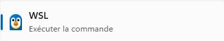

Whois : Adresses IP et URL
La machine virtuelle dispose d'une distribution Linux intégrée, qui vous permet d'utiliser des outils de recherche en sources ouvertes ou d'aide aux investigations.
Choisissez ci-dessous le type d'investigations que vous souhaitez mener et laissez-vous guider dans la création de la ligne de commande nécessaire.
Cette ligne de commande devra simplement être copiée/collée dans le terminal WSL.



Whois
"Whois" est un service qui permet d'interroger une base de données pour obtenir des informations sur la propriété d'un nom de domaine ou d'une adresse IP sur Internet. Ces informations incluent généralement des détails sur le propriétaire du domaine, l'adresse de contact, les serveurs de noms associés, et d'autres détails liés à l'enregistrement du domaine.
Lorsque vous enregistrez un nom de domaine sur Internet, les informations que vous fournissez, telles que votre nom, votre adresse e-mail, votre numéro de téléphone, etc., sont généralement enregistrées dans une base de données Whois. Cela permet aux personnes de savoir qui est le propriétaire d'un domaine particulier et de contacter la personne en cas de besoin, par exemple, pour des questions administratives ou techniques.
Munissez-vous de l'adresse IP sur laquelle portent vos investigations et renseignez-la dans le champ ci-dessous :
(Format : 000.000.000.000 - google.fr)
L'analyse du résultat obtenu est accessible aux personnels formés "ICM".
Pour rappel, voici une définition des principaux termes utiles :
Registrar : Vendeur des noms de domaines
Registrant : Loueur, utilisateur final du nom de domaine